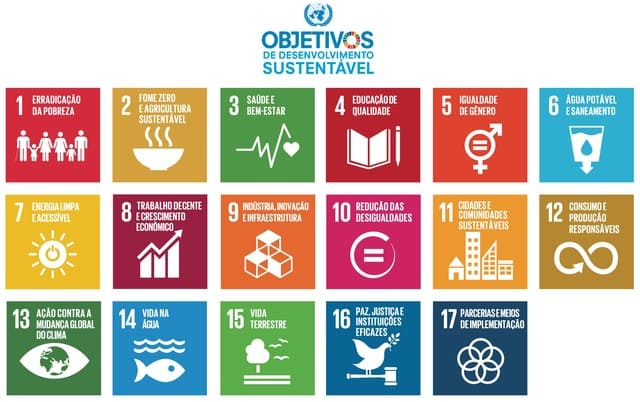
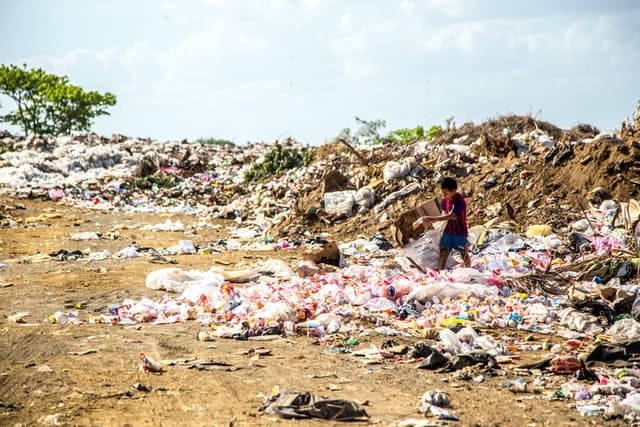
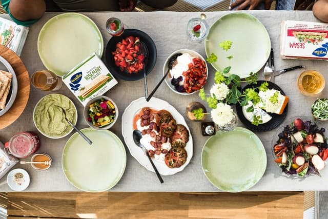
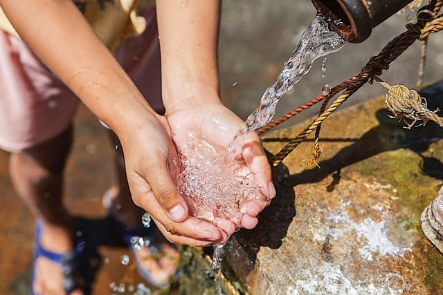
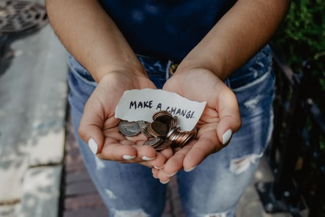

Fábrica de Felicidade - 2022
ODS e ESG
Por Shin emDiferença entre ODS e ESG
ODS é a sigla para Objetivos de Desenvolvimento Sustentável.
A ONU, formada por 193 países, em 2015 estipulou 17 Objetivos de Desenvolvimento Sustentável para 2030. Estamos chegando na metade do prazo.
ESG é a sigla do inglês Environment, Social, Governance. São práticas internas para empresas visando questões ambientais, sociais e de governança.
Pontuando a diferença, ESG é uma visão de empresa e ODS é uma questão mundial.
OS 17 ODS
A seguir serão mostrados os 17 ODS sem modificar as palavras segundo o site da ONU Brasil para não haver risco de má interpretação.
1.Erradicação da Pobreza
Erradicar a pobreza em todas as formas e em todos os lugares.
2.Fome Zero e Agricultura Sustentável
Erradicar a fome, alcançar a segurança alimentar, melhorar a nutrição e promover a agricultura sustentável.
3.Saúde e Bem-estar
Garantir o acesso à saúde de qualidade e promover o bem-estar para todos, em todas as idades.
4.Educação de Qualidade
Garantir o acesso à educação inclusiva, de qualidade e equitativa, e promover oportunidades de aprendizagem ao longo da vida para todos.
5.Igualdade de Gênero
Alcançar a igualdade de gênero e empoderar todas as mulheres e meninas.
6.Água Potável e Saneamento
Garantir a disponibilidade e a gestão sustentável da água potável e do saneamento para todos.
7.Energia Limpa e Acessível
Garantir o acesso a fontes de energia fiáveis, sustentáveis e modernas para todos.
8.Trabalho Decente e Crescimento Econômico
Promover o crescimento econômico inclusivo e sustentável, o emprego pleno e produtivo e o trabalho digno para todos.
9.Indústria, Inovação e Infraestrutura
Construir infraestruturas resilientes, promover a industrialização inclusiva e sustentável e fomentar a inovação.
10.Redução das Desigualdades
Reduzir as desigualdades no interior dos países e entre países.
11.Cidades e Comunidades Sustentáveis
Tornar as cidades e comunidades mais inclusivas, seguras, resilientes e sustentáveis.
12.Consumo e Produção Responsáveis
Garantir padrões de consumo e de produção sustentáveis.
13.Ação Contra a Mudança Global do Clima
Adotar medidas urgentes para combater as alterações climáticas e os seus impactos.
14.Vida na Água
Conservar e usar de forma sustentável os oceanos, mares e os recursos marinhos para o desenvolvimento sustentável.
15.Vida Terrestre
Proteger, restaurar e promover o uso sustentável dos ecossistemas terrestres, gerir de forma sustentável as florestas, combater a desertificação, travar e reverter a degradação dos solos e travar a perda da biodiversidade.
16.Paz, Justiça e Instituições Eficazes
Promover sociedades pacíficas e inclusivas para o desenvolvimento sustentável, proporcionar o acesso à justiça para todos e construir instituições eficazes, responsáveis e inclusivas a todos os níveis.
17.Parcerias e Meios de Implementação
Reforçar os meios de implementação e revitalizar a parceria global para o desenvolvimento sustentável.
Alinhamento Empresa x ODS
Agora que já conhecemos os 17 ODS podemos ver na prática como aplicar.
Talvez você possa estar pensando que a sua empresa não consegue alinhar com estes objetivos pois não tem nenhum envolvimento com os temas. Então, um exemplo simples: se a sua empresa tem um faturamento lucrativo e não tem nenhum tipo de doação ou ações para a comunidade mais carente, já demonstra um desalinhamento com o primeiro ODS que é a erradicação da pobreza.
Podemos analisar o case da empresa Fábrica de Felicidade, que gera resultados nas empresas através da felicidade. A princípio, na ótica apenas da área de atuação deste empreendimento não existe relação com as ODS. Porém, esta é uma empresa muito envolvida com mais da metade das ODS.
O modelo econômico da Fábrica de Felicidade é baseado no cliente escolher o preço a se pagar. Ainda com o faturamento total, 10% é destinado à pessoas invisíveis na sociedade, na sua maioria moradores de rua. Ainda possui uma política interna de empoderamento feminino, diversidade e equidade. Na mais alta hierarquia está uma mulher preta e pobre.
Com isso, existe envolvimento da ODS1 Erradicação da Pobreza, ODS2 Fome Zero, ODS3 Saúde e Bem-estar, ODS4 Educação de Qualidade, ODS5 Igualdade de Gênero, ODS8 Trabalho decente, ODS9 Indústria, Inovação e Infraestrutura, ODS10 Redução das desigualdades, ODS12 Consumo e produção, ODS16 Paz, justiça e instituições eficazes e ODS17 Parcerias e meios de implementação.
Ao fortalecer a camada mais pobre da sociedade, várias ODS se beneficiam indiretamente. Tende a diminuir a violência em busca de sobrevivência. Diminui-se a falta de estudo por falta de condições dignas. A fome por falta de recursos também.
Se a sua empresa não tem alguma forma de auxílio aos mais vulneráveis, o mundo poderia ser um pouco melhor com a sua ajuda. Pense nisso, pois deste mundo nada levaremos.
Muito obrigado pela sua leitura e um forte abraço.